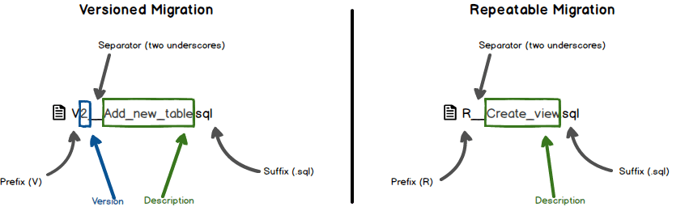

<!DOCTYPE html>


  <html class="dark page-post">


<head><meta name="generator" content="Hexo 3.9.0">
  <meta charset="utf-8">
  
  <title>使用Flyway管理你的Spring boot数据库版本 | 如是我闻</title>

  <meta name="viewport" content="width=device-width, initial-scale=1, maximum-scale=1">

  
    <meta name="keywords" content="Java,Gradle,Spring Boot,Spring,">
  

  <meta name="description" content="引言　　Flyway是一款开源的数据库版本管理工具，它更倾向于规约优于配置的方式。Flyway可以独立于应用实现管理并跟踪数据库变更，支持数据库版本自动升级，并且有一套默认的规约，不需要复杂的配置，Migrations可以写成SQL脚本，也可以写在Java代码中，不仅支持Command Line和Java API，还支持Build构建工具和Spring Boot等，同时在分布式环境下能够安全可靠地">
<meta name="keywords" content="Java,Gradle,Spring Boot,Spring">
<meta property="og:type" content="article">
<meta property="og:title" content="使用Flyway管理你的Spring boot数据库版本">
<meta property="og:url" content="https://pkaq.org/2018/09/11/flyway/index.html">
<meta property="og:site_name" content="如是我闻">
<meta property="og:description" content="引言　　Flyway是一款开源的数据库版本管理工具，它更倾向于规约优于配置的方式。Flyway可以独立于应用实现管理并跟踪数据库变更，支持数据库版本自动升级，并且有一套默认的规约，不需要复杂的配置，Migrations可以写成SQL脚本，也可以写在Java代码中，不仅支持Command Line和Java API，还支持Build构建工具和Spring Boot等，同时在分布式环境下能够安全可靠地">
<meta property="og:locale" content="default">
<meta property="og:image" content="https://pkaq.org/2018/09/11/flyway/sql_migration_naming.png">
<meta property="og:updated_time" content="2018-09-11T23:50:38.937Z">
<meta name="twitter:card" content="summary">
<meta name="twitter:title" content="使用Flyway管理你的Spring boot数据库版本">
<meta name="twitter:description" content="引言　　Flyway是一款开源的数据库版本管理工具，它更倾向于规约优于配置的方式。Flyway可以独立于应用实现管理并跟踪数据库变更，支持数据库版本自动升级，并且有一套默认的规约，不需要复杂的配置，Migrations可以写成SQL脚本，也可以写在Java代码中，不仅支持Command Line和Java API，还支持Build构建工具和Spring Boot等，同时在分布式环境下能够安全可靠地">
<meta name="twitter:image" content="https://pkaq.org/2018/09/11/flyway/sql_migration_naming.png">

  

  
    <link rel="icon" href="/favicon.ico">
  

  <link href="/css/styles.css?v=d671a41f" rel="stylesheet">


  
    <link rel="stylesheet" href="/css/fexo-theme.css">
  

  

  
  <script type="text/javascript">
    var _hmt = _hmt || [];
    (function() {
      var hm = document.createElement("script");
      hm.src = "//hm.baidu.com/hm.js?cd1f06c6f057506d537ab11e9f1693be";
      var s = document.getElementsByTagName("script")[0];
      s.parentNode.insertBefore(hm, s);
    })();
  </script>


  
    <script async src="https://dn-lbstatics.qbox.me/busuanzi/2.3/busuanzi.pure.mini.js"></script>
  

  
    <link rel="stylesheet" href="//cdn.bootcss.com/font-awesome/4.3.0/css/font-awesome.min.css">
  

  <link href="//cdn.webfont.youziku.com/webfonts/nomal/97080/42410/5865c4e5f629db00cc915895.css" rel="stylesheet" type="text/css">
 
</head>
</html>
<body>


  
    <span id="toolbox-mobile" class="toolbox-mobile">　</span>
  

  <div class="post-header CENTER">
   
  <div class="toolbox">
    <a class="toolbox-entry" href="/">
      <span class="toolbox-entry-text">　</span>
      <i class="icon-angle-down"></i>
      <i class="icon-home"></i>
    </a>
    <ul class="list-toolbox">
      
        <li class="item-toolbox">
          <a
            class="CIRCLE toolbox_color_0"
            href="/archives/"
            rel="noopener noreferrer"
            target="_self"
            >
            博客
          </a>
        </li>
      
        <li class="item-toolbox">
          <a
            class="CIRCLE toolbox_color_1"
            href="/category/"
            rel="noopener noreferrer"
            target="_self"
            >
            分类
          </a>
        </li>
      
        <li class="item-toolbox">
          <a
            class="CIRCLE toolbox_color_2"
            href="/tag/"
            rel="noopener noreferrer"
            target="_self"
            >
            标签
          </a>
        </li>
      
        <li class="item-toolbox">
          <a
            class="CIRCLE toolbox_color_3"
            href="/link/"
            rel="noopener noreferrer"
            target="_self"
            >
            友链
          </a>
        </li>
      
        <li class="item-toolbox">
          <a
            class="CIRCLE toolbox_color_4"
            href="/atom.xml"
            rel="noopener noreferrer"
            target="_blank"
            >
            RSS
          </a>
        </li>
      
        <li class="item-toolbox">
          <a
            class="CIRCLE toolbox_color_5"
            href="/search/"
            rel="noopener noreferrer"
            target="_self"
            >
            搜索
          </a>
        </li>
      
    </ul>
  </div>


</div>


  <div id="toc" class="toc-article">
    <strong class="toc-title">文章目录</strong>
    <ol class="toc"><li class="toc-item toc-level-1"><a class="toc-link" href="#null"><span class="toc-text">引言#</span></a></li><li class="toc-item toc-level-1"><a class="toc-link" href="#null"><span class="toc-text">版本#</span></a></li><li class="toc-item toc-level-1"><a class="toc-link" href="#null"><span class="toc-text">步骤#</span></a></li></ol>
  </div>


<div class="content content-post CENTER">
   <article id="post-flyway" class="article article-type-post" itemprop="blogPost">
  <header class="article-header">
    <h1 class="post-title">使用Flyway管理你的Spring boot数据库版本</h1>

    <div class="article-meta">
      <span>
        <i class="icon-calendar"></i>
        <span>2018.09.11</span>
      </span>

      
        <span class="article-author">
          <i class="icon-user"></i>
          <span>PKAQ</span>
        </span>
      

      
  <span class="article-category">
    <i class="icon-list"></i>
    <a class="article-category-link" href="/categories/Spring-Boot/">Spring Boot</a>
  </span>


      

      
      <i class="fa fa-eye"></i> 
        <span id="busuanzi_container_page_pv">
           &nbsp热度 <span id="busuanzi_value_page_pv">
           <i class="fa fa-spinner fa-spin"></i></span>℃
        </span>
      

      
        <i class="icon-comment"></i> 
        共 <a class="ds-thread-count" id="uyan_count_unit" su="使用Flyway管理你的Spring boot数据库版本" href="https://pkaq.org/2018/09/11/flyway/index.html"></a>
      
      
    </div>
  </header>

  <div class="article-content">
    
      <h1><span id="yin-yan">引言</span><a href="#yin-yan" class="header-anchor">#</a></h1><p>　　<code>Flyway</code>是一款开源的数据库版本管理工具，它更倾向于规约优于配置的方式。Flyway可以独立于应用实现管理并跟踪数据库变更，支持数据库版本自动升级，并且有一套默认的规约，不需要复杂的配置，Migrations可以写成SQL脚本，也可以写在Java代码中，不仅支持Command Line和Java API，还支持Build构建工具和Spring Boot等，同时在分布式环境下能够安全可靠地升级数据库，同时也支持失败恢复等。</p>
<p>　　通常在项目上线后，由于需求的不断改进或功能的完善需要对个别字段进行调整或新增。如果采用传统方式直接修改开发和生产数据库但凡涉及人为操作总无法避免出错的可能。一种方法是避免直接修改数据库，所有数据库修改通过PDM去操作。当然毕竟PDM是花钱的，通过采用<code>Flyway</code>编写变更脚本的方式，可以使应用在启动时检查数据库变更并进行自动同步。</p>
<a id="more"></a>
<h1><span id="ban-ben">版本</span><a href="#ban-ben" class="header-anchor">#</a></h1><ul>
<li>Flyway: 5.1.4</li>
<li>Gradle: 4.10</li>
<li>Spring Boot: 2.0.4</li>
</ul>
<h1><span id="bu-zou">步骤</span><a href="#bu-zou" class="header-anchor">#</a></h1><p>　　Flyway对数据库进行版本管理主要由Metadata表和6种命令完成，Metadata主要用于记录元数据，在Flyway首次启动时会创建默认名为<code>flyway_schema_history</code>的元数据表，该表用于记录版本变更日志、Checksum等信息。</p>
<p>　　Flyway脚本的命名规则如下：</p>
<p></p>
<ul>
<li>prefix: 可配置，前缀标识，默认值<code>V</code>表示Versioned，<code>R</code>表示Repeatable</li>
<li>version: 标识版本号，由一个或多个数字构成，数字之间的分隔符可用点<code>.</code>或下划线<code>_</code></li>
<li>separator: 可配置，用于分隔版本标识与描述信息，默认为两个下划线<code>__</code></li>
<li>description: 描述信息，文字之间可以用下划线或空格分隔</li>
<li>suffix: 可配置，后续标识，默认为<code>.sql</code></li>
</ul>
<p>　　要实现在<code>Spring boot</code>中使用<code>Flyway</code>进行版本管理需要做到如下步骤：</p>
<pre><code>1. 添加依赖  
2. 来点配置
3. 编写脚本
</code></pre><p>　　这里示例以一个存在若干张表的数据库为例，为该库添加一张新的<code>test_alpha</code>表，然后追加一列<code>bravo</code>。   </p>
<p>1.添加依赖   </p>
<figure class="highlight css"><table><tr><td class="gutter"><pre><span class="line">1</span><br></pre></td><td class="code"><pre><span class="line"><span class="selector-tag">compile</span> "<span class="selector-tag">org</span><span class="selector-class">.flywaydb</span><span class="selector-pseudo">:flyway-core</span><span class="selector-pseudo">:5.1.4"</span></span><br></pre></td></tr></table></figure>
<p>2.来点配置 <code>application.yaml</code>   </p>
<figure class="highlight yaml"><table><tr><td class="gutter"><pre><span class="line">1</span><br><span class="line">2</span><br><span class="line">3</span><br><span class="line">4</span><br></pre></td><td class="code"><pre><span class="line"><span class="comment"># flyway配置 对于非空数据库 需要开启此项避免报错</span></span><br><span class="line"><span class="attr">spring:</span></span><br><span class="line"> <span class="attr">flyway:</span></span><br><span class="line">  <span class="attr">baseline-on-migrate:</span> <span class="literal">true</span></span><br></pre></td></tr></table></figure>
<p>3.准备脚本   </p>
<p>　　依据上文描述的命名规则，在<code>src\main\resources\db\migration</code>下添加你的数据库变更脚本，这里需要注意的是，由于我们是在非空数据库进行操作，所以这里的版本号是从<code>v2</code>开始。</p>
<p><code>V2__Add_new_table.sql</code></p>
<figure class="highlight sql"><table><tr><td class="gutter"><pre><span class="line">1</span><br><span class="line">2</span><br><span class="line">3</span><br><span class="line">4</span><br><span class="line">5</span><br></pre></td><td class="code"><pre><span class="line"><span class="keyword">DROP</span> <span class="keyword">TABLE</span> <span class="keyword">IF</span> <span class="keyword">EXISTS</span> flyway_test_alpha;</span><br><span class="line"><span class="keyword">CREATE</span> <span class="keyword">TABLE</span> <span class="string">`flyway_test_alpha`</span>  (</span><br><span class="line">	<span class="string">`id`</span>          	<span class="built_in">int</span>(<span class="number">11</span>) AUTO_INCREMENT <span class="keyword">NOT</span> <span class="literal">NULL</span>,</span><br><span class="line">	<span class="string">`column_alpha`</span>	<span class="built_in">varchar</span>(<span class="number">30</span>) <span class="literal">NULL</span>,</span><br><span class="line">	PRIMARY</span><br></pre></td></tr></table></figure>
<p><code>V3__Add_column.sql</code></p>
<figure class="highlight sql"><table><tr><td class="gutter"><pre><span class="line">1</span><br><span class="line">2</span><br></pre></td><td class="code"><pre><span class="line"><span class="keyword">ALTER</span> <span class="keyword">TABLE</span> <span class="string">`flyway_test_alpha`</span></span><br><span class="line">	<span class="keyword">ADD</span> <span class="keyword">COLUMN</span> <span class="string">`column_bravo`</span> <span class="built_in">varchar</span>(<span class="number">25</span>) <span class="literal">NULL</span></span><br></pre></td></tr></table></figure>
<p>　　</p>
<p>现在启动你的应用，你会发现这两项操作会隐士完成了，实在是非常省心。</p>
<p>附录: Flyway配置详解</p>
<figure class="highlight plain"><table><tr><td class="gutter"><pre><span class="line">1</span><br><span class="line">2</span><br><span class="line">3</span><br><span class="line">4</span><br><span class="line">5</span><br><span class="line">6</span><br><span class="line">7</span><br><span class="line">8</span><br><span class="line">9</span><br><span class="line">10</span><br><span class="line">11</span><br><span class="line">12</span><br><span class="line">13</span><br><span class="line">14</span><br><span class="line">15</span><br><span class="line">16</span><br><span class="line">17</span><br><span class="line">18</span><br><span class="line">19</span><br><span class="line">20</span><br><span class="line">21</span><br><span class="line">22</span><br><span class="line">23</span><br><span class="line">24</span><br></pre></td><td class="code"><pre><span class="line">flyway.baseline-description= # 执行基线时标记已有Schema的描述</span><br><span class="line">flyway.baseline-version=1 # 基线版本默认开始序号 默认为 1. </span><br><span class="line">flyway.baseline-on-migrate=false # 针对非空数据库是否默认调用基线版本 ， 这也是我们上面版本号从 2 开始的原因</span><br><span class="line">flyway.check-location=false # 是否开启脚本检查 检查脚本是否存在 默认false</span><br><span class="line">flyway.clean-on-validation-error=false # 验证错误时 是否自动清除数据库 高危操作！！！</span><br><span class="line">flyway.enabled=true # 是否启用 flyway.</span><br><span class="line">flyway.encoding=UTF-8 # 脚本编码.</span><br><span class="line">flyway.ignore-failed-future-migration=true # 在读元数据表时，是否忽略失败的后续迁移.</span><br><span class="line">flyway.init-sqls= # S获取连接后立即执行初始化的SQL语句</span><br><span class="line">flyway.locations=classpath:db/migration # 脚本位置， 默认为classpath: db/migration.</span><br><span class="line">flyway.out-of-order=false # 是否允许乱序（out of order）迁移</span><br><span class="line">flyway.placeholder-prefix= # 设置每个占位符的前缀。 默认值： $&#123; 。 </span><br><span class="line">flyway.placeholder-replacement=true # 是否要替换占位符。 默认值： true 。 </span><br><span class="line">flyway.placeholder-suffix=&#125; # 设置占位符的后缀。 默认值： &#125; 。 </span><br><span class="line">flyway.placeholders.*= # 设置占位符的值。</span><br><span class="line">flyway.schemas= # Flyway管理的Schema列表，区分大小写。默认连接对应的默认Schema。</span><br><span class="line">flyway.sql-migration-prefix=V # 迁移脚本的文件名前缀。 默认值： V 。 </span><br><span class="line">flyway.sql-migration-separator=__ # 迁移脚本的分割符 默认双下划线</span><br><span class="line">flyway.sql-migration-suffix=.sql # 迁移脚本的后缀 默认 .sql</span><br><span class="line">flyway.table=schema_version # Flyway使用的Schema元数据表名称 默认schema_version</span><br><span class="line">flyway.url= # 待迁移的数据库的JDBC URL。如果没有设置，就使用配置的主数据源。</span><br><span class="line">flyway.user= # 待迁移数据库的登录用户。</span><br><span class="line">flyway.password= # 待迁移数据库的登录用户密码。</span><br><span class="line">flyway.validate-on-migrate=true # 在运行迁移时是否要自动验证。 默认值： true 。</span><br></pre></td></tr></table></figure>
<link href="/css/prism-dark.css" rel="stylesheet">
    
  </div>
</article>

</div>


  <div class="text-center donation">
    <div class="inner-donation">
      <span class="btn-donation">支持一下</span>
      <div class="donation-body">
        <div class="tip text-center">您得支持,是我前进的动力.</div>
        <ul class="theme.donation.items.length">
        
          <li class="item">
            
          </li>
        
        </ul>
      </div>
    </div>
  </div>


  <a id="backTop" class="back-top">
    <i class="icon-angle-up"></i>
  </a>


  <div class="modal" id="modal">
  <span id="cover" class="cover hide"></span>
  <div id="modal-dialog" class="modal-dialog hide-dialog">
    <div class="modal-header">
      <span id="close" class="btn-close">关闭</span>
    </div>
    <hr>
    <div class="modal-body">
      <ul class="list-toolbox">
        
          <li class="item-toolbox">
            <a
              class="CIRCLE"
              href="/archives/"
              rel="noopener noreferrer"
              target="_self"
              >
              博客
            </a>
          </li>
        
          <li class="item-toolbox">
            <a
              class="CIRCLE"
              href="/category/"
              rel="noopener noreferrer"
              target="_self"
              >
              分类
            </a>
          </li>
        
          <li class="item-toolbox">
            <a
              class="CIRCLE"
              href="/tag/"
              rel="noopener noreferrer"
              target="_self"
              >
              标签
            </a>
          </li>
        
          <li class="item-toolbox">
            <a
              class="CIRCLE"
              href="/link/"
              rel="noopener noreferrer"
              target="_self"
              >
              友链
            </a>
          </li>
        
          <li class="item-toolbox">
            <a
              class="CIRCLE"
              href="/atom.xml"
              rel="noopener noreferrer"
              target="_blank"
              >
              RSS
            </a>
          </li>
        
          <li class="item-toolbox">
            <a
              class="CIRCLE"
              href="/search/"
              rel="noopener noreferrer"
              target="_self"
              >
              搜索
            </a>
          </li>
        
      </ul>

    </div>
  </div>
</div>


  
      <div class="fexo-comments comments-post">
    

    
  <section class="duoshuo-comments">

    <!-- UY BEGIN -->
    <div id="uyan_frame"></div>
    <script async type="text/javascript" src="http://v2.uyan.cc/code/uyan.js?uid=2144561">
    <!-- UY END -->
  </section>

  <script type="text/javascript">
	var uyan_config = {
	     'su':"使用Flyway管理你的Spring boot数据库版本" 
	};
	</script>


  </div>

  

  <script type="text/javascript">
  function loadScript(url, callback) {
    var script = document.createElement('script')
    script.type = 'text/javascript';

    if (script.readyState) { //IE
      script.onreadystatechange = function() {
        if (script.readyState == 'loaded' ||
          script.readyState == 'complete') {
          script.onreadystatechange = null;
          callback();
        }
      };
    } else { //Others
      script.onload = function() {
        callback();
      };
    }

    script.src = url;
    document.getElementsByTagName('head')[0].appendChild(script);
  }

  window.onload = function() {
    loadScript('/js/bundle.js?235683', function() {
      // load success
    });
  }
</script>

<script src="/live2dw/lib/L2Dwidget.min.js?094cbace49a39548bed64abff5988b05"></script><script>L2Dwidget.init({"pluginRootPath":"live2dw/","pluginJsPath":"lib/","pluginModelPath":"assets/","tagMode":false,"debug":false,"model":{"jsonPath":"/live2dw/assets/assets/hijiki.model.json"},"display":{"position":"right","width":150,"height":300},"mobile":{"show":true},"log":false});</script></body>
</html>
